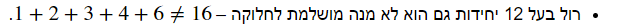

בתרגיל האחרון, במקום optional=['milk'] צ"ל optionals=['milk']
מחברת 3
תיקון מספר 1
את הפונקציה find_pythagorean_triples שאינה Generator, יש לשנות לפונקציה הבאה:
def find_pythagorean_triples(upper_bound=10_000):
pythagorean_triples = []
for c in range(3, upper_bound):
for b in range(2, c):
for a in range(1, b):
if a ** 2 + b **2 == c ** 2:
pythagorean_triples.append((a, b, c))
return pythagorean_triples
for triple in find_pythagorean_triples():
print(triple)
זה בסדר אם פתרתי באופן שכל אחד מן הפרקים ללא כל הפרטים, קיבל שם : page not found ומספור?
yosi3sabag
בשאלה האחרונה (פרדוקס ימי הולדת) נכתב:
“מהו אחוז הכיתות שבהן ציינו 2 ימי הולדת באותו תאריך? השוו עם הפתרון המוצג בוויקיפדיה”.
ככל שאני מבין את רוח השאלה, אולי היה צריך לכתוב “לפחות 2 ימי הולדת” [(p(x>1 במקום (p(x=2].
לפי ההגדרה הנוכחית במידה ובכיתה ישנם 3 תלמידים עם אותו תאריך יום הולדת- אנו נתייחס לכיתה זו כמו לכיתה ללא תלמידים עם אותו תאריך יום הולדת…
לייק 1
neri
באוספים אין סופיים, בדוגמה של הגנרטור, השורה numbers[1, 1] מיותרת
לייק 1
eldad.el1234
בקשר לשאלה של הימי הולדת:
האם הפונקציה שאנחנו כותבים צריה לקבל את השנתון שעליו מבוצע החישוב של תלמידי בית הספר? רשום שהפונקציה צריכה לקבל נתון של כמות כיתות, כמות ילדים בכיתה ולהתחשב בהאם שנה מעוברת או לא (נתון שנקבע לפי שנתון עליו מבצעים את הפונקציה).
אם כך-האם הפונקציה שאני כותב צריכה להיות בעלת 3 ארגומנטים או 2?
hushay12
היי ביקשתם תיקונים קטנים לעתיד וראיתי מה רשמת מעלה אבל זה עדיין מבלבל:
מחברת 3 - מנה מושלמת לחלוקה

צריך לשנות לשווה 16
orpazf
@hushay12
זה תיקון מספר 2
ושים לב שים ביקש לא לתייג אותו
לייק 1
hushay12
כן ראיתי את התיקון וציינתי את זה, אבל בשורה אחריי יש שווה אז הרגשתי שזה נכון לציין לעתיד שעדיף ככה. וסבבה לא אתייג. למחוק את ההערה?
orpazf
הכוונה היא האם סכום מחלקיו של מספר שווה או לא שווה למספר עצמו, לכן יש בחלק שווה ובחלק לא שווה
noa.izhaki
במחברת 3 תחת ההסבר על “חיסכון בזיכרון” כתוב “נכתוב פונקציה רגילה שמקבלת מספר שלם, ומחזירה רשימה של כל המספרים השלמים מ־0 ועד עד אותו מספר (נשמע לכם מוכר?)”
אני חושבת ש"עד" אחד מיותר.